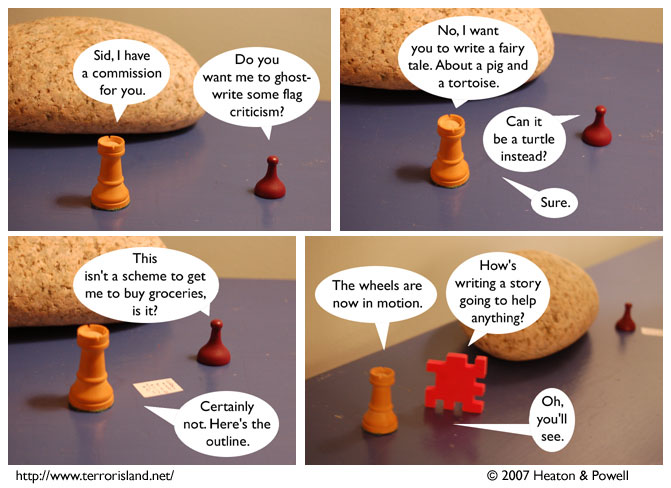

Strip #102
— Monday, February 5, 2007
Sid knows that tortoises are boring.
Notes, Thoughts, &c.
Ben’s Notes
Fans of FOMS, my old photocomic, may both recognize the rock in today’s strip as the brick elemental from the fire station storyline. This isn’t really a crossover, though. In the context of Terror Island, it’s just a rock, not a character.
Lewis’s Notes
The fingers on my left hand have increased dexterity as the result of playing Guitar Hero 2. It would be nice if, for every skill or ability I wanted to develop, there was the appropriate ‘hero’ game to structure my training in the form of short enjoyable tasks with scored feedback and adjustable difficulty levels. Seriously, I would totally get, “Drawing Hero,” “Getting/Keeping Your Apartment Organized Hero,” and “Social Interaction Hero.”